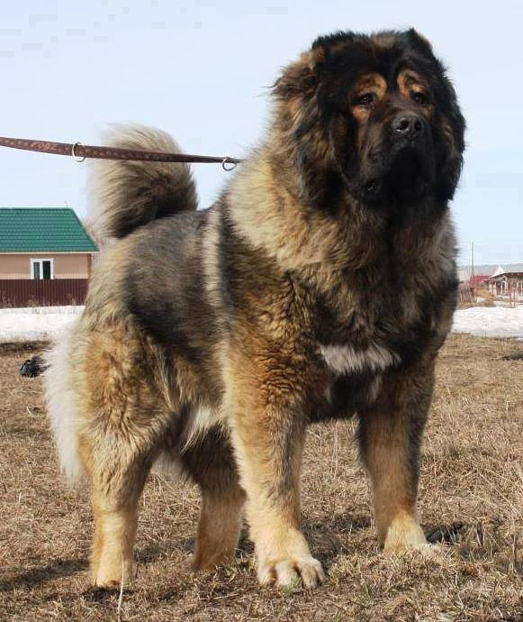

ქართული ნაგაზი

ნაგაზი — სასამსახურო ძაღლების ჯიშთა ჯგუფი. განსხვავდებიან წარმოშობითა და ექსტერიერით. იყენებენ სამწყემსო, საყარაულო, სამძებრო და სხვ. სამსახურში. გამოირჩევიან ტანადობით, პროპორციულობით, ხშირი ბეწვით, სიმძლავრით, გულადობითა და გამძლეობით; ადვილად იგეშებიან. გავრცელებულია უმთავრესად გერმანული, კავკასიური, შუააზიური, სამხრეთრუსული, შეტლანდიური (კოლი), უნგრული (პული, პუმი, კუვასი, კომანდორი), პოლონური, სლოვაკური (ჩუვაჩი), ფრანგული ბრიარდული, ბელგიური (მოლინუა) და სხვ. ჯიშის ნაგაზი. სულხან-საბა ორბელიანის განმარტებით ნაგაზი „თართისა“ (დიდი მიდამოს მცველი ძაღლი), და „მწევრის“ (სწრაფი და გვარიანი ძაღლი) შეჯვარებით მიიღება. საბა იქვე აკონკრეტებს, რომ ნაგაზი შესაძლოა შინ გაზრდილი მგლისა და თართის, ან მგლისა და მწევრის შეჯვარებითაც იქნას მიღებული და ამგვარად შობილი ნაგაზი, მისი თქმით, უმჯობესია[1].